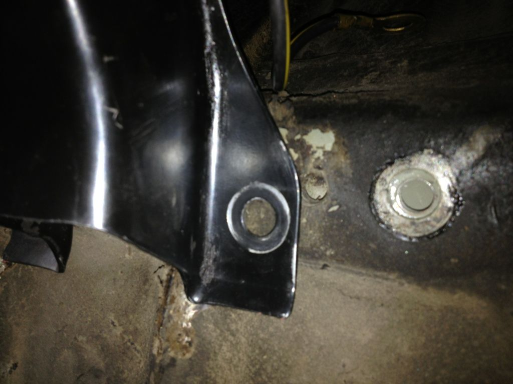

-
Ok guys so good news, the motor is in!!! Only trouble is that the transmission mount is not lining up the car..... never had this issue before. The car is a 86na and the trans is the 30A. So whats the deal?


1985 Nissan 300ZX 2+2- My first Z, back in the family
1987 Nissan 300ZX Turbo RIP 4/87 - 4/28/2011
Under Construction: 1986 Nissan 300ZX NA2T Slicktop
Originally posted by Tempestas -
What trans mount are you using?86na2t + holset
feedback
viewtopic.php?f=18&t=6114&hilit=andrew+gardner -
I'm thinking its the one from the 86, but I can't be sure. I had two and tossed one, thinking they were all the same. Doh!
1985 Nissan 300ZX 2+2- My first Z, back in the family
1987 Nissan 300ZX Turbo RIP 4/87 - 4/28/2011
Under Construction: 1986 Nissan 300ZX NA2T Slicktop
Originally posted by Tempestas -
Ok well looks like the brackets are different on the 84-86 and 87-89 brackets. So that must be the deal. Too bad I already customized the other mount haha
Oh well..... will update after junkyard tomorrow!
1985 Nissan 300ZX 2+2- My first Z, back in the family
1987 Nissan 300ZX Turbo RIP 4/87 - 4/28/2011
Under Construction: 1986 Nissan 300ZX NA2T Slicktop
Originally posted by Tempestas

Copyright © 2006–. All rights reserved. Privacy Policy